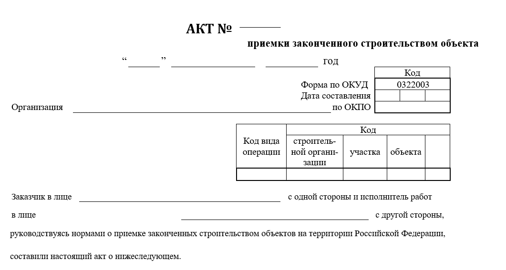
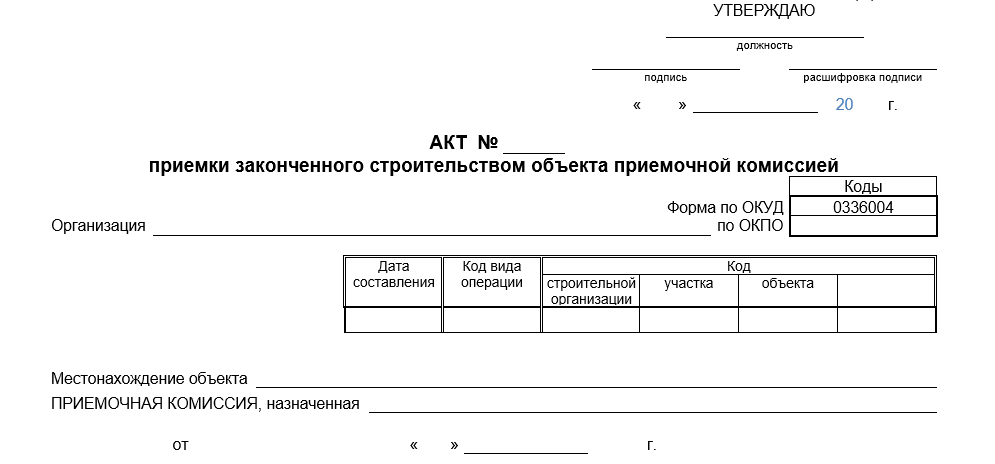
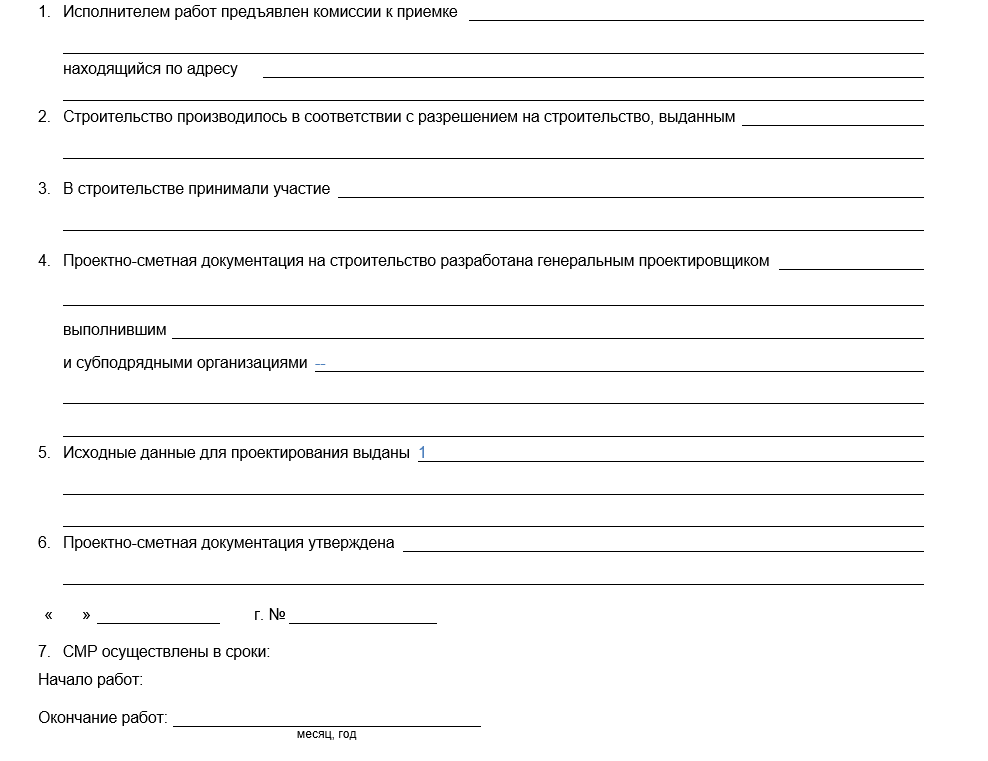
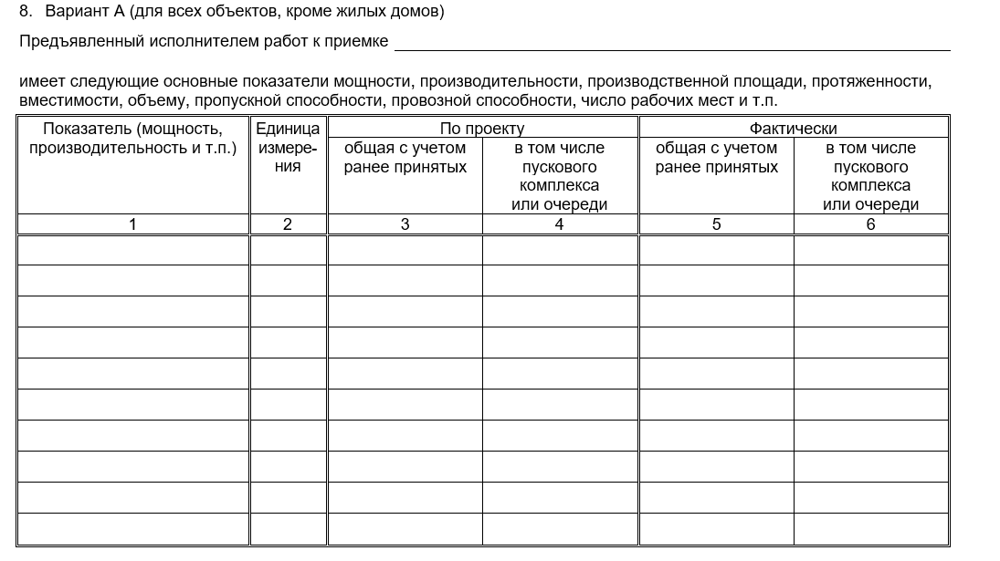
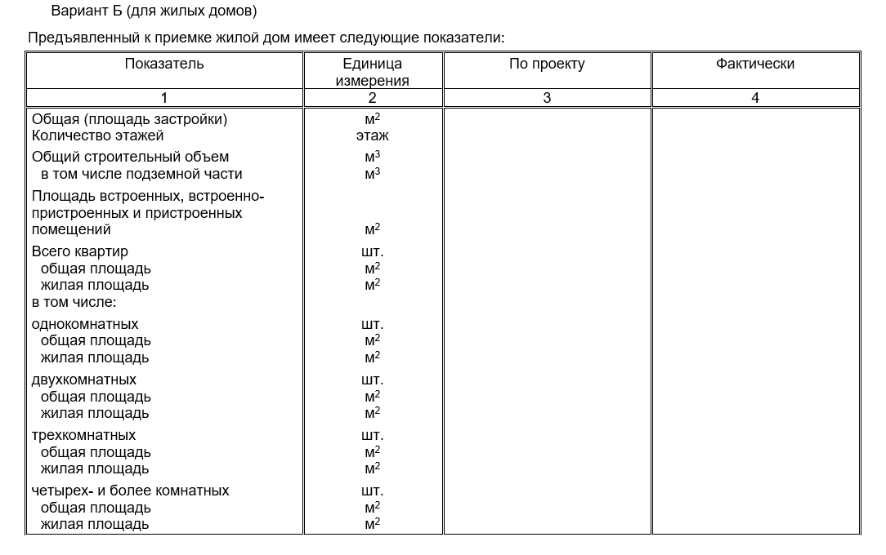
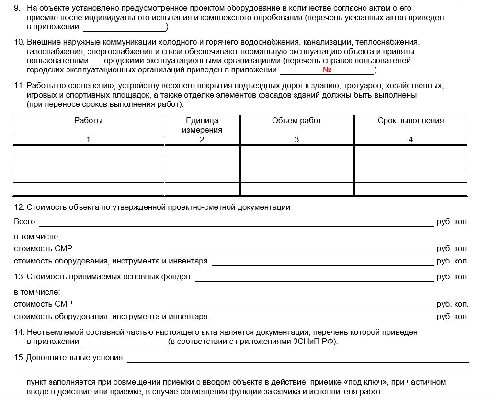
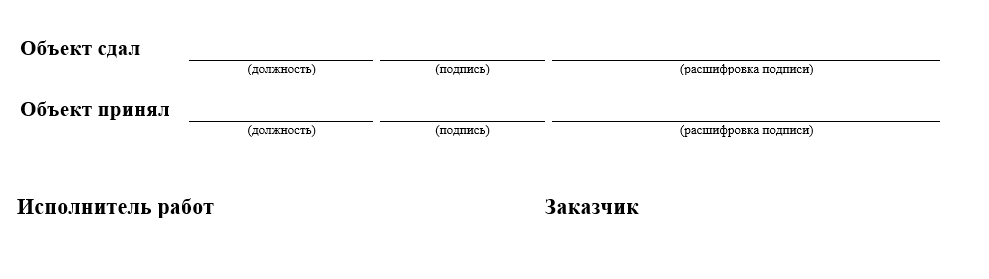
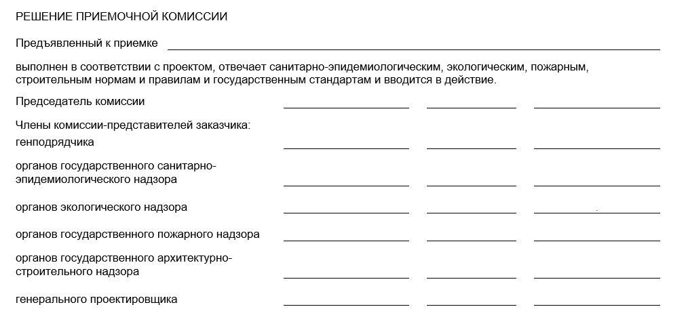

Как работать с актами приемки законченного строительством объекта – формы КС-11 и КС-14
В этом уроке вы выявите разницу между актами КС-11 и КС-14. Поймете, когда составляют эти документы и научитесь заполнять их по правилам.

Чем отличаются акты КС-11 и КС-14
КС-11 и КС-14 – похожие между собой акты. Главное отличие – порядок, в котором составляют документ, и расхождения в формах.
КС-11 подтверждает, что заказчик принял выполненные по договору работы.
КС-14 дополнительно подтверждает, что объект ввели в эксплуатацию.
Объект принят только когда подписаны КС-11 и КС-14.
Рассмотрим каждый документ подробнее.
КС-11 – акт приемки законченного строительством объекта, который составляют, когда принимают:
- строительные работы,
- ремонтные работы,
- инженерные работы.
Акт подтверждает, что выполненные работы соответствуют нормам и утвержденной проектной документации.
КС-14 – акт приемки законченного строительством объекта приемочной комиссией.
Документ составляют с участием приемочной комиссии, которая проверяет, соответствуют ли выполненные работы договору, а также санитарным, проектным, строительным нормам.
Кто входит в состав комиссии
КС-11 – исполнитель и заказчик.
КС-14 – исполнитель, заказчик и приемочная комиссия, которую утверждает заказчик или инвестор.
Как заполнять акты
Начало акта
КС-11
На образце ниже указаны правила заполнения акта. Наведите на желтую точку, чтобы ознакомиться с условием.
Иллюстрация к уроку
Изображение сохранено с исходной встроенной страницы.

КС-14
На образце ниже указаны правила заполнения акта. Наведите на желтую точку, чтобы ознакомиться с условием.
Иллюстрация к уроку
Изображение сохранено с исходной встроенной страницы.

Основная часть КС-11 и КС-14
Эта часть одинаковая для обоих актов.
На образце ниже указаны правила заполнения акта. Наведите на желтую точку, чтобы ознакомиться с условием.
Иллюстрация к уроку
Изображение сохранено с исходной встроенной страницы.

Иллюстрация к уроку
Изображение сохранено с исходной встроенной страницы.


Иллюстрация к уроку
Изображение сохранено с исходной встроенной страницы.

Ответственные представители. Окончание актов.
КС-11
На образце ниже указаны правила заполнения акта. Наведите на желтую точку, чтобы ознакомиться с условием.
Иллюстрация к уроку
Изображение сохранено с исходной встроенной страницы.

КС-14
На образце ниже указаны правила заполнения акта. Наведите на желтую точку, чтобы ознакомиться с условием.
Иллюстрация к уроку
Изображение сохранено с исходной встроенной страницы.

Поздравляем вас с завершением курса по составлению первичной учетной документации, подтверждающей факт выполнения работ перед Заказчиком! На этом курсе вы научились формировать документы для отчета о работах, материалах, оборудовании и расходах в строительстве. Вы узнали, как правильно оформлять первичную учетную документацию и освоили заполнение форм КС-2, КС-3, КС-6а, а также КС-11 и КС-14.
Самое важное
КС-11 – акты приемки законченного строительством объекта. КС-14 – акты приемки законченного строительством объекта приемочной комиссией.
Основная часть актов КС-11 и КС-14 дублируется.
{kind=link}
{kind=link}
{kind=link}
{kind=link}
{kind=link}
{kind=link}
{kind=link}
{kind=link}